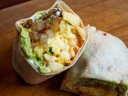

Breakfast Burrito

Description
This breakfast burrito is the greatest thing I have ever made. I have eaten it multiple days in a row. It is relatively easy to make, and you can switch it up depending on what you like. I like mine with some heat, so if you would rather have a tamer burrito, just take the spice out.
Ingredients
- Two or Three Eggs
- One Jalapeno
- Chihuahua Cheese
- Large burrito tortilla
- 1 tbsp unsalted butter
- Guacamole
- At least two strips bacon
- Sriracha hot sauce
Directions
- Cook up the bacon strips in a pan, cut up jalapeno into small pieces while cooking
- After bacon is cooked, cut into small bits
- Prepare eggs by beating them in a bowl, after thoroughly beating them, butter the pan and then add the eggs to the heat
- Cook eggs to desired level, remove from heat
- Assemble burrito. Put the eggs on the center, top with chihuahua cheese, crumbled bacon bits, jalapeno bits, guacamole, and sriracha
- Roll burrito, can optionally put the rolled burrito back on pan to brown/crisp the tortilla
- Enjoy!
Back to main menu